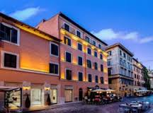

Roma..The City Of Love & Lights
Neighborhoods To Rome
The bulk of what you’ll want to visit—ancient, Renaissance, and baroque Rome (as well as the train station)—lies on the east side of the Tiber River (Fiume Tevere), which meanders through town. However, several important landmarks are on the other side: St. Peter’s Basilica and the Vatican, the Castel Sant’Angelo, and the colorful Trastevere neighborhood. With the exception of those last sights,it’s fair to say that Rome has the most compact and walkable city center in Europe. That doesn’t mean you won’t get lost from time to time (most newcomers do). Arm yourself with a detailed street map of Rome (or a smartphone with a hefty data plan). Most hotels hand out a pretty good version. And know that street address in Rome can be frustrating. Numbers usually run consecutively, with odd numbers on one side of the street and evens on the other. However, in the old districts the numbers sometimes run up one side and then run back in the opposite direction on the other side.Therefore, no. 50 could be opposite no. 308.Finally, remember that much of the historic core of Rome does not fall under easy or distinct neighborhood classifications. Instead, most people’s frame of reference, when describing a location within the centro, is the name of the nearest large monument or square, like St. Peter’s or Piazza di Spagna.

 Vatican City & the Prati : Vatican City is technically a sovereign state,
although in practice it is just another part of Rome. The Vatican Museums, St. Peter’s,
and the Vatican Gardens take up most of the land area, and the popes have lived here for 6 centuries.
The neighbourhood north of the Vatican—called “Borgo Pio”—contains some
good hotels (and several bad ones), but it is removed from the more happening scene of ancient and
Renaissance Rome and getting to and from those areas can be time-consuming. Borgo Pio is also rather dull
at night and contains few, if any, of Rome’s finest restaurants. The white-collar Prati district,
a middle-class suburb just east of the Vatican, is possibly a better choice, thanks to its smattering of affordable hotels,
its shopping streets, and the fact that it boasts some excellent places to eat.
Vatican City & the Prati : Vatican City is technically a sovereign state,
although in practice it is just another part of Rome. The Vatican Museums, St. Peter’s,
and the Vatican Gardens take up most of the land area, and the popes have lived here for 6 centuries.
The neighbourhood north of the Vatican—called “Borgo Pio”—contains some
good hotels (and several bad ones), but it is removed from the more happening scene of ancient and
Renaissance Rome and getting to and from those areas can be time-consuming. Borgo Pio is also rather dull
at night and contains few, if any, of Rome’s finest restaurants. The white-collar Prati district,
a middle-class suburb just east of the Vatican, is possibly a better choice, thanks to its smattering of affordable hotels,
its shopping streets, and the fact that it boasts some excellent places to eat.
Centro Storico & the Pantheon :One of the most desirable (and busiest) areas of Rome, the Centro Storico (“Historic Center”) is a maze of narrow streets and cobbled alleys dating from the Middle Ages, and filled with churches and palaces built during the Renaissance and baroque eras. The only way to explore it is on foot. Its heart is Piazza Navona, built over Emperor Domitian’s stadium and bustling with sidewalk cafes,palazzi, street artists, musicians, and pickpockets.Also known as "Roma Centro" which is a modern city magically overlaid onto the memory of past glory. A postcard-publisher's dream, this neighborhood is crammed with Rome’s most famous classical sights. Unlike next-door Campitelli, Roma Centro doesn’t feel like a museum. Fabulously dressed street musicians and bright, airy markets flourish in the shadow of the Colosseum, while every journey through the area's tangled, narrow back street brings travelers to a hidden trattoria or surprising boutique shop.Rivaling Piazza Navona—in general activity, the cafe scene, and the nightlife—is the area around the Pantheon, which remains from ancient Roman times and is surrounded by a district built much later. South of Corso Vittorio Emanuele and centered on Piazza Farnese and the square of Campo de’ Fiori, many buildings in this area were constructed in Renaissance times as private homes. West of Via Arenula lies one of the city’s most intriguing districts, the old Jewish Ghetto, where the increasingly fashionable dining options far outnumber the hotels.
Testaccio & Southern Rome : In a.d. 55, Emperor Nero ordered that Rome’s thousands of broken amphorae and terra-cotta roof tiles be stacked in a pile to the east of the Tiber, just west of today’s Ostiense Railway Station. Over the centuries, the mound grew to a height of around 61m (200 ft.) and then was compacted to form the centerpiece for one of the city’s most unusual working-class neighborhoods, Testaccio. Houses were built on the perimeter of the terracotta mound and caves were dug into its mass to store wine and foodstuffs. Once home to slaughterhouses and Rome’s former port on the Tiber, Testaccio is now known for its authentic Roman restaurants. It’s also one of Rome’s liveliest areas after dark.
Ancient Rome, Monti & Celio : Although no longer the heart of the city, this is where Rome began, with the Colosseum, Palatine Hill, Roman Forum, Imperial Forums, and Circus Maximus. This area offers only a few hotels—most of them inexpensive to moderate in price—and not a lot of great restaurants. Many restaurant owners have their eyes on the cash register and the tour-bus crowd, whose passengers are often herded in and out of these restaurants so fast that they don’t know whether the food is any good. Just beyond the Circus Maximus is the Aventine Hill, south of the Palatine and close to the Tiber, now a leafy and rather posh residential quarter—with great city views. You will get much more of a neighborhood feel if you stay in Monti (Rome’s oldest rione, or quarter) or Celio. Both also have good dining, aimed at locals as well as visitors, and Monti, especially, has plenty of life from aperitivo o’clock and into the wee hours of the night.
Further south and east, the Via Appia Antica is a 2,300-year-old road that has witnessed much of the history of the ancient world. By 190 b.c., it extended from Rome to Brindisi on the southeast coast. Its most famous sights are the Catacombs, the graveyards of early Christians and patrician families (despite what it says in “Quo Vadis,” they weren’t used as a place for Christians to hide while fleeing persecution). This is one of the most historically rich areas of Rome, great for a daytrip but not a good place to stay.